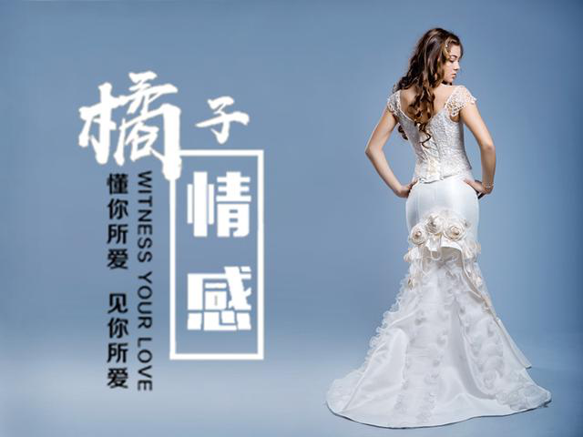

官方二维码
免费情感热线电话
4006-299-520

官方二维码
免费情感热线电话
4006-299-520

我们之前讲过很多的关于男人被分手后，怎样去挽回女人的方法和技巧。那么在挽回中，有一点是很重要的，也是学员在学习挽回攻略的过程中很难掌握和学会的。就是如何看出女人希望我去挽回她？换句话说，女人暴露出哪些点，是在暗示你去挽回她的呢？
但矜持是女人相伴于前两种特性所存在的本能，即使她对你百般的思念，也不会想要去主动联系你。
不过，当对你的思念积攒到一定地步的时候。她会想要去表达这样的一种你矛盾的内心。因此在今天的文章中，具有多年挽回爱情经验的橘子情感总结出了一些关于女人给你的挽回信号的干货知识，希望能给在挽回真爱的迷途的你们一些帮助。
当然了，今天的话题，是基于我们提供的挽回方案和技巧之上的，一定是你在对女人在导师的指导下，之前做过自我建设、恢复联系并且对于对方有过二次吸引的。
经过复联后，两个人之间不会有那么尖锐的针锋相对，而是慢慢的将感情的温度慢慢调高。再这样的情况下，就是在等待女生向你打开窗口。那么女女人的哪些举动才是表示她需要你进一步采取行动了呢？
朋友圈是个捕捉对方信息的好地方，要知道，每一条的朋友圈都寄托着本人当时最直接的情感。
而你要做的，就是从分手后开始，就去紧密的关注女人的朋友圈。
在你们刚分手的时候，女人一般情况下都会表达出自己比较平静，这段感情的结束好像没有影响到她一样；而过几天后，失去感情的痛感会慢慢的被突然没有了你的生活而唤起，她会想要去找一些出口去宣泄。
因此在朋友圈中，她大概就会有这样过分夸张的举动，比如说：去夜店或者是酒吧、和男性相约进餐、出去旅行、一个人散步、一个人喝酒等。
当你发现女人在发这样的朋友圈的时候，你也不要闲着。你也需要去更新你的朋友圈，但是你说发的动态的感情基调一定是要表现你很平静，比如说：和朋友出去聚餐、去健身房、打球等一系列日常生活的照片。甚至你可以发一些预选，举个例子就是你可以发一些和女性的照片（注意不要太亲密，让目标理解为你和别人暧昧就不好了。）或者说发一些礼物，言语中暗示是女人送的，以此暗示出你有人追求的现象。
再过一段时间，你就会发现，女生的朋友圈又发生了一些变化，开始写伤春悲秋的句子。比如说：“握不住的沙干脆扬了。”这样的诗句。
如果女人开始发这样的朋友圈，就代表挽回的契机点来了。你可以发现，这个时候的女人开始感觉到寂寞，开始回想你们感情中美好的地方，所以她也就愈发的思念你，想和你联系。这个时候你去找她，她应该会原意去和你聊，并且会在短期之内抛给你见面的窗口。
或者说，女人开始在你的朋友圈里点赞或者是评论，这个时候她的目的是想要跟你展开话题，这个时候你就要抓住契机，和她建立联系。
刚才上文提到，在你们分开一段时间内，余情未了的心会促使你们想要了解对方的情况，特别是你在朋友圈中展现出了你的改变、你生活的一角或者说是你在朋友圈上和预选的照片，都会吸引天生自带好奇本质的女人。
那么她们会以什么样的方式去了解呢？回答是：你们之间的共同朋友，或者说你们身边最好的朋友。
当你发现你的朋友或者是她的闺蜜向你打听你的生活，你的事情尤其是你的恋爱状况的时候，你放心，一定是女人买通好派来的使者。
这个时候，你就应该将计就计，将你想对对方说的话说给这个“中间人”，让他去帮助你传达，几次后，相信你们之间的感情就会更加一步的提升，毕竟是你们相互把最真实的想法做了个交换。
在这个阶段，你们之间的聊天交流一般还是需要靠聊天软件。但是聊天软件的聊天内容中，对方的字里行间也会表达出对你的暗示。
比如说，她会主动的找你请教一些问题，这些问题可能你们之前有过讨论，她提出来也是为了让你能够回忆到当时的感觉；或者说她会提一些你比较擅长的问题，在你详细的、很好的帮助她解答后，她会借机表达出她对你的崇拜。这个时候你应该顺势展开一些别的话题，可以将话题向邀约方向靠拢。
这样的对话是一个比较正面的教材。当然，要注意的是这件事情是你来引导，但是风格和口味要是对方感兴趣的。
除此之外，女生在聊天中的这些表现，也是对你的一种暗示。比如她会经常的主动去找你聊天、分享很多关于她生活中的事情、说起你们共同记忆中的事或者说起你们之间共同朋友的事。如果她有上面的这些话题，那么你就大胆的约她吧，她也正在等你的行动。
生活中，各种各样的问题都在影响着两性之间的爱情发展，当你觉得对其束手无策的时候，从业多年有着丰富爱情挽回经验的橘子情感，能够随时倾听你的问题，帮助你分析和策划挽回方案。
关于两性之间的情感，其实还有很多的因素会影响最终的事态走向，橘子情感从业多年以来，对于爱情挽回和情感狙击也是自成一套，帮助近万例的男女成功收获幸福。如果您有情感问题，一定要及时采取有效措施解决，不要等到失去了才后悔莫及。